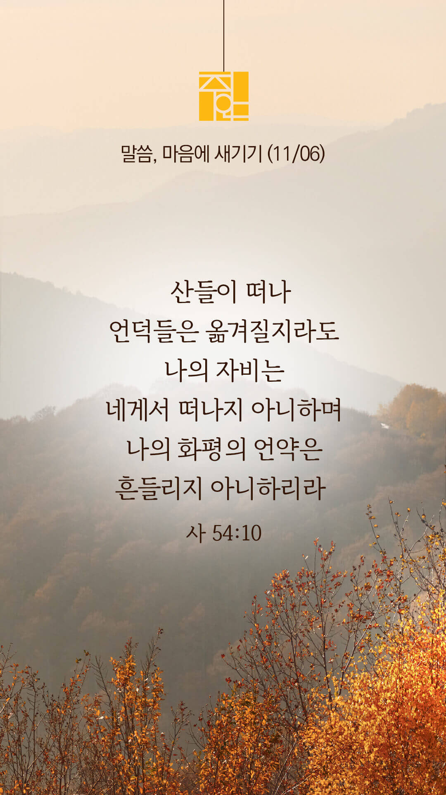

기도실 안내
2022년 11월 06일 (주일)
- 온라인 기도실은 온 회중이 함께 주님 앞으로 나아가는 자리입니다.
- 30분 정도 여유를 가지고 하시b기 바랍니다.
- 말s씀과 묵상, 찬양과 기도로 나아갑니다.
- 배경 음악이 나올 수 있습니다 볼륨을 조절해주세요.
준비가 되셨으면 아래의 버튼을 눌러주세요.
할렐루야
내 영혼아 여호와를 찬양하라
시 146:1
- 먼저 찬양의 가사를 천천히 읽어 봅시다.
내 안에 사는 이
내 안에 사는 이 예수 그리스도니
나의 죽음도 유익 함이라
내 안에 사는 이 예수 그리스도니
나의 죽음도 유익함이라
나의 왕 내 노래
내 생명 또 내 기쁨
나의 힘 나의 검
내 평화 나의 주
할렐루야
내 영혼아 여호와를 찬양하라
시 146:1
내 안에 사는이 by 온 땅 위에 CCM
위의 찬양이 끝나면 말씀읽기를 눌러주시면 됩니다.
주의 말씀은 내 발에 등이요
내 길에 빛이니이다 (시119:105)
오늘의 말씀입니다.
음악 소리가 크면 조절하시기 바랍니다.

마음의 묵상
사 54:10
“산들이 떠나며 언덕들은 옮겨질지라도 나의 자비는 네게서 떠나지 아니하며 나의 화평의 언약은 흔들리지 아니하리라 너를 긍휼히 여기시는 여호와께서 말씀하셨느니라”
1. 여호와의 자비와 언약은 어떠할 것이라고 말씀하나요?
2. 하나님은 당신을 긍휼히 여기시는 분이심을 믿으시나요?
3. “주님, 저와 저의 가정을 긍휼히 여기시고 도와주소서” 간절히 기도합시다.
우리 주님은 긍휼하신 하나님이십니다.
회개, 삶의 방향을 바꾸는 결정
지금 모습 그대로 주님께 나아갑니다.
“그러므로 내가 스스로 거두어들이고
티끌과 재 가운데에서 회개하나이다”
- 욥기 42:6 -
3분 정도 회개하며 주님 앞에 나아갑니다
사슴이 시냇물을 찾기에 갈급함 같이
시 42:1
- 다음의 말씀을 소리 내어 읽습니다.
[욥기 42장 1-5절]
1 욥이 여호와께 대답하여 이르되
2 주께서는 못 하실 일이 없사오며 무슨 계획이든지 못 이루실 것이 없는 줄 아오니
3 무지한 말로 이치를 가리는 자가 누구니이까 나는 깨닫지도 못한 일을 말하였고 스스로 알 수도 없고 헤아리기도 어려운 일을 말하였나이다
사슴이 시냇물을 찾기에 갈급함 같이
시 42:1
- 다음의 말씀을 소리 내어 읽습니다.
[욥기 42장 1-5절]
4 내가 말하겠사오니 주는 들으시고 내가 주께 묻겠사오니 주여 내게 알게 하옵소서
5 내가 주께 대하여 귀로 듣기만 하였사오나 이제는 눈으로 주를 뵈옵나이다
하나님 나라
1. 하나님의 나라가 속히 이 땅에 임하게 하소서
하나님 아버지,
나라와 민족 간의 분쟁과 전쟁이 그치게 하소서. 열방 가운데 평화가 임하게 하시고, 복음이 전파되게 하소서. 특히 지금도 복음을 듣지 못한 이들에게 새로운 방법으로 복음이 들어가게 하시고, 그 땅에도 교회가 세워지게 하소서.
간절한 마음으로 3분 정도 기도합시다
남과 북
2. 남북한이 속히 복음으로 통일되게 하소서
하나님 아버지,
북한이 미사일 도발을 멈추게 하시고, 평화와 대화의 방법을 찾게 하소서. 북한에 복음이 전파되고, 교회가 세워지고, 지하교회 성도들이 마음껏 찬양하고 기도하는 자유의 그 날이 속히 오게 하소서.
간절한 마음으로 3분 정도 기도합시다
대한민국
3. 우리나라가 하나님을 경외하는 나라가 되게 하소서
하나님 아버지,
이태원 참사 희생자들과 유가족들을 위로하여 주시고, 그로 인해 상한 국민들의 마음도 치유하여 주소서. 다시는 이런 참사가 일어나지 않도록 올바른 대책이 세워지게 하시고, 우리나라가 안전한 곳이 되게 하소서.
간절한 마음으로 3분 정도 기도합시다
한국 교회
4. 한국교회가 성령으로 새롭게 부흥되게 하소서
하나님 아버지,
모세와 여호수아처럼 나라와 민족을 새롭게 하고, 하나님을 경외하는 지도자들과 다음 세대들이 한국 교회 안에서 많이 배출되게 하소서. 한국 교회가 어려운 이 시대에 나라와 민족을 위해 기도하며 민족의 소망이 되는 교회가 되게 하소서.
간절한 마음으로 3분 정도 기도합시다
주안교회
5. 주안교회가 선교적 삶으로 복음의 빛을 비추는 교회가 되게 하소서
긍휼의 하나님 아버지,
큰 고통과 슬픔을 당한 이 민족을 불쌍히 여기사 긍휼을 베풀어 주옵소서. 특별히 사랑하는 가족들을 잃어 커다란 슬픔에 빠져 있는 가족들을 위로하여 주시고, 커다란 상실감에 빠져 있는 청년들을 붙잡아 주사 다시 일어나게 하옵소서. 그리스도인들이 나라와 민족을 위하여 눈물로 드리는 중복기도를 들으시고, 이 나라를 회복시켜 주옵소서.
간절한 마음으로 3분 정도 기도합시다
감사의 기도
- 오늘 기도를 인도하신 주님께 감사를 올려드립니다.
- 아래의 구절을 읽고 주님께 감사의 마음을 올려드립시다.
“하나님의 나라는 말에 있지 아니하고
오직 능력에 있음이라”
- 고린도전서 4장 20절 -
고요한 가운데 잠시 침묵하시기 바랍니다.
파송, 세상을 향하여
- 오늘의 온라인 기도를 마쳤습니다.
기도를 들으신 주님께서 평안히 가라 하십니다.
주님께서 우리와 함께 하시니 두려울 것이 없습니다.
새벽을 깨우며
- 새벽기도회 안내입니다.